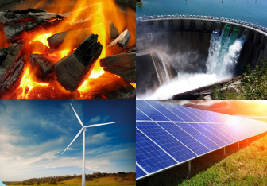
To know the importance of resources
To describe the renewable resources
To understand the non-renewable resources
To identify the fossil fuel resources
A country’s socio, economic and political strength lies in the distribution, utilization and conservation of its resources. Anything which can be used for satisfying the human needs are called resource. Natural resources are resources that exist without action of humankind. Natural resources are obtained from environment. Many natural resources are essential for human survival. Resources always cannot be consumed in its original form, but they can be processed into usable commodities and usable things.
Natural resources satisfy are daily needs such as food, clothing and shelter.
Natural resources also contribute immensely to boost up a nation’s economy.
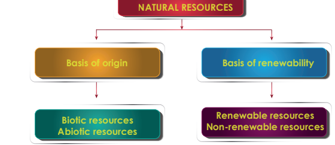
On the basis of origin, resources may be divided into two types.
They are
1. Biotic resources
2. Abiotic resources
1 . Biotic resources
Biotic resources are found in the biosphere which are obtained from living and organic materials. It includes forests, crops, birds, animals, fishes, man and materials that can be obtained from them. Fossil fuels such as coal and petroleum are also included in this category because they are formed from decayed organic matter.
2 . Abiotic resources
Abiotic resources are the non-living parts of an environment. Examples of abiotic resources include land, water, air, sunlight and heavy metals including ores such as gold, iron, copper, silver etc.
On the basis of renewability, resources are divided into two types.
They are
1. Renewable resources
2. Non - renewable resources
1 . Renewable resources
A renewable resource is a resource which can be used repeatedly and replaced naturally. Renewable resources harvested and used rationally will not produce pollution. The use of renewable resources and energy sources is increasing worldwide.
Example: solar energy, vind energy, and hydropower.
The sun produces energy in the form of heat and light. Solar energy is not harmful to the environment. Photovoltaic devices or solar cells, directly convert solar energy into electricity. Individual solar cell in group panel can perform small applications from charging calculator, watch batteries, to large such as to power residential dwellings. Photovoltaic power plants and concentrating solar power plants are the largest solar applications covering acres. India, China, Japan, Italy and United States of America are major utilizers of solar energy in the world.
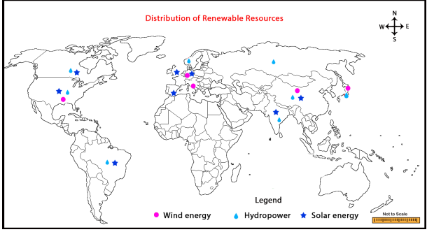
Kamuthi solar power project is one of the largest solar power projects in the world. It is situated in Ramanathapuram District in Tamilnadu. The Kamuthi solar power project was completed on twenty one September 2016. Investment of this project is around 4,550 Crores. The installed capacity of this project is 648 Mega watt.
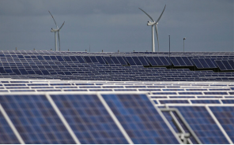
Vind power is clean energy since Vind turbines does not produce any emissions. In recent years, most used Vind energy has become one of the most economical and renewable energy technologies. The Classic Dutch Vind mill harnessed the Vind’s energy hundreds of years ago. Modern Vind turbines with three blades dot the landscape today, turning Vind into electricity. Major Vind energy producing countries are United States, China, Germany, Spain, India, United Kingdom, Canada and Brazil.
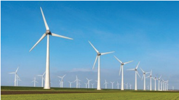
Serial number |
Vind Forms |
District |
State |
Installed Capacity (Mega watt) |
Serial number 1 |
Vind forms in Muppandal |
District Kanyakumari |
State Tamil Nadu |
Installed Capacity 1,500 Mega watt |
Serial number 2 |
Vind forms in Jaisalmer |
District Jaisalmer |
State Rajasthan |
Installed Capacity 1,064 Mega watt |
Serial number 3 |
Vind forms in Brahmanvel |
District Dhule |
State Maharashtra |
Installed Capacity 528 Mega watt |
Serial number 4 |
Vind forms in Dhalgaon |
District Sangli |
State Maharashtra |
Installed Capacity 278 Mega watt |
Serial number 5 |
Vind forms in Damanjodi |
District Damanjodi |
State Odisha |
Installed Capacity 99 Mega watt |
Water is considered as a great source of energy. At present, water is used for producing hydroelectric power. Hydroelectricity is generated from moving water with high velocity and great falls with the help of turbines and dynamos. Hydroelectricity power is the cheapest and most versatile source of energy out of all the known energy. Hydroelectric power is a renewable resource. China, Canada, Brazil, United States of America, Russia, India, Norway and Japan are some countries producing hydroelectricity. China is the largest producer of hydro electricity.
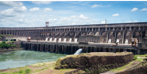
Hydro - electric power project in India |
|
|
|
Serial number |
Hydro - electricity project |
Installed Capacity (Mega watt ) |
State |
Serial number 1 |
Hydro - electricity project Tehri Dam |
Installed Capacity 2,400 Mega watt |
State Uttarakhand |
Serial number 2 |
Hydro - electricity project Srisailam Dam |
Installed Capacity 1,670 Mega watt |
State Telangana |
Serial number 3 |
Hydro - electricity project Nagarjuna Sagar Dam |
Installed Capacity 960 Mega watt |
State Andhra Pradesh |
Serial number 4 |
Hydro - electricity project Sardar Sarovar Dam |
Installed Capacity 1,450 Mega watt |
State Gujarat |
Serial number 5 |
Hydro - electricity project Bhakra Nangal Dam |
Installed Capacity 1,325 Mega watt |
State Punjab |
Serial number 6 |
Hydro - electricity project Koyna Dam |
Installed Capacity 1,960 Mega watt Mega watt |
State Maharashtra |
Serial number 7 |
Hydro - electricity project Mettur dam |
Installed Capacity 120 |
State Tamil Nadu |
Serial number 8 |
Hydro - electricity project Idukki dam |
Installed Capacity 780 Mega watt |
State Kerala |
Hydro electric power project in world
Serial number |
Name of the Project |
Country |
River |
Installed Capacity in Mega watt |
Serial number 1 |
Name of the Project, Three gorges Dam |
Country China |
River Yangtze |
Installed Capacity 22,500 Mega watt |
Serial number 2 |
Name of the Project, Itaipu Dam |
Country Brazil and Paraguay |
River Parana |
Installed Capacity 14,000 Mega watt |
Serial number 3 |
Name of the Project, Xiluodu Dam |
Country China |
River Jinsha |
Installed Capacity 13,860 Mega watt |
Serial number 4 |
Name of the Project, Guri Dam |
Country Venezuela |
River Caroni |
Installed Capacity 10,235 Mega watt |
Serial number 5 |
Name of the Project, Tucurui Dam |
Country Brazil |
River Tocantins |
Installed Capacity 8,370 Mega watt
|
Do you know
Three Gorges Dam in China is the largest hydroelectricity project in the world. It’s construction started in 1994 and ended in 2012. The installed capacity of the dam is 22,000Megawatt.
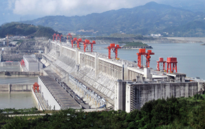
Natural resources that once consumed and cannot be replaced is called non-renewable resources. Continuous consumption of non-renewable resources ultimately leads to exhaustion. Examples of non-renewable resources include fossil fuels such as coal, petroleum, natural gas and mineral resources such as iron, copper, bauxite, gold, silver and others. Non renewable resources can be divided into three types.
They are Metallic resources, Non Metallic resources , Fossil fuel resources
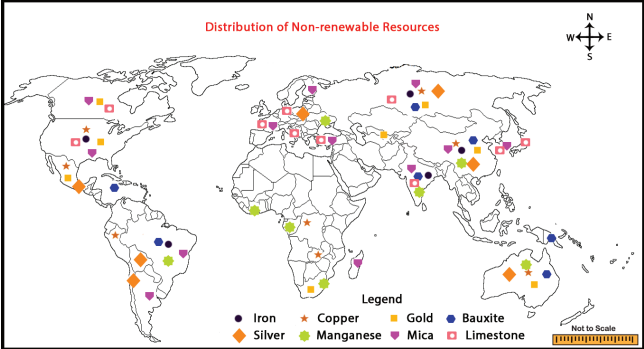
Metallic resources are the type of resources that are composed of metals. These are hard substances, which are the good conductors of heat and electricity. Example for metallic resources are iron, copper, gold, bauxite, silver, manganese, etcetera.
Iron is the fourth most common element in the Earth’s crust and the most widely available metal. Magnetite and hematite are the common ore for iron, which occurs normally in the rocks of the crust. Iron ore is the key raw material in making steel and 98% of the iron ore extracted is used to make Steel. Pure iron ore is very soft, but its strength is increased many folds by adding small amount of carbon and manganese. It’s low cost and high earth strength makes it usable in engineering applications, such as the construction of machinery and machine tools, automobiles, construction of large ships, structural components of building, bridges etcetera.
Iron ore is mined in about 50 countries. Among the iron ore producing countries China, Australia, Brazil, India and Russia are the principal producers accounting for 85% of the world’s total output of iron ore. These countries have 70% of the total reserves of the world. Jharkhand, Odisha, Madhya Pradesh, Chhattisgarh, Karnataka and Goa account for over 95 per cent of the total reserves of India. Iron ores found at Kanjamalai in Tamil Nadu.
Copper is one of the first metals known and used by man. Copper ranks as the third most consumed industrial metal in the world after Iron and Aluminium. Copper is good conductor of heat and electricity. About three quarters of copper is used to make electrical wires, telecommunication cables and electronics. Chile is the world’s number one country in the production of copper. Other copper producing countries are Peru, China, United States, Congo and Australia.
It is a rare and precious metal. Hence, it has high demand in world markets. Formerly, it was used for minting coins, but now it is used for making ornaments and in dentistry. It is regarded as a symbol of prosperity and a form of wealth. China is the world’s largest producer of gold. Also, Australia, Russia, United States, South Africa and Canada are the major producers of gold. Among these countries, Australia has 9500 tons reserves of gold ore and it is world’s leading country in gold ore reserves. Karnataka is the largest producer of gold in India.
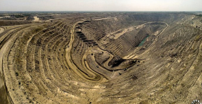
Aluminium is produced from bauxite ore. There are several ores that contain aluminium but bauxite contains more aluminium. Aluminium has wide range of uses compared to other metals. Aluminium is light in weight and its tough and cheaper, which makes it a popular metal for constructional purpose. It is mainly used in the construction of aircrafts, ship, automobiles, railway coaches and etcetera. Aluminium is a good conductor of electricity and heat, hence, it is used for making electrical cables. It is highly resistant to corrosion. By the addition of small quantities of other metals toaluminium, it creates superior alloy than pure aluminium. Example Duralumin. Australia is the world’s leading bauxite producer. Apart from that, China, Brazil, India, Guinea, Jamaica and Russia also play an important role in bauxite production. One fourth of the bauxite mineral deposits found in Guinea alone. Odisha, Gujarat, Jharkhand, Maharashtra, Chhattisgarh, Tamil Nadu and Madhya Pradesh are the main bauxite producing states in India. The bauxite deposits are mainly found in the Shervaroy hills of Salem district, Tamil Nadu.
Manganese is a steel greyed, hard, shiny and brittle metal. The common ores of manganese are Pyrolusite Manganese, Psilomelane and Rhodochrosite. Manganese is essential for the production of good quality Steel. Manganese is used in making electrical batteries. It is also used as colouring material in bricks, pottery, floor tiles. Manganese compounds are used in making disinfecting liquids, bleaching powder, fertilizers exectra .
South Africa is the world’s leading producer of manganese. The significant producers of manganese in the world are China, Australia, Gabon, Brazil and India. All these producers have large reserves of manganese and are significant exporters in the world.
Non-metallic resources can be described as the resources that do not comprise of metals. These are not hard substances, and they are not good conductors of heat and electricity. Example for non-metallic resources are mica, limestone, gypsum, dolomite, phosphate, etc.
Muscovite and Biotite are the common ores of Mica. It is one of the indispensable minerals that is used in electrical and electronics industry. It is used as an insulating material in electrical industry and in powder form, it is used for making lubricating oils and decorative wallpapers. China is the world’s top producer of mica. Russia, Finland, United States, Turkey and Republic of Korea also play a major role in the production of mica. About 95 per cent of India’s mica is found in just three states of Andhra Pradesh, Rajasthan and Jharkhand.
Limestone is a sedimentary rock, composed mainly by skeletal fragments of marine organisms such as coral, foraminifera and molluscs. About 10% of sedimentary rocks are limestones. Mostly limestone is made into crushed stone and used as a construction material. It is used for facing stone, floor tiles, stair treads, Vindows sills and many other purposes. Crushed limestone is used in smelting and other metal refining process. Portland cement is made from limestone.
China produces more than half of limestone production in the world. Beside this, United States, India, Russia, Brazil and Japan also produce more Limestone. Madhya Pradesh, Rajasthan, Andhra Pradesh, Gujarat, Chhattisgarh and Tamil Nadu Produce over three-fourths of the total limestone of India. In Tamil Nadu, Large scale limestone reserve found in Ramanathapuram, Tirunelveli, Ariyalur, Salem, Coimbatore and Madurai districts.
Fossil fuel resources are normally formed from the remains of dead plants and animals. They are often referred to as fossil fuels and are formed from hydrocarbon. When fossil fuels are burned, they become a great source of heat energy. Example for fossil fuel resources are coal, petroleum and natural gas.
This is the most abundantly found fossil fuel that forms when dead plant matter is converted into peat. It is used as a domestic fuel, in industries such as iron and steel, steam engines to generate electricity. Electricity produced from coal is called Thermal Power. Coal is classified into four types based on carbon content. They are
1 . Anthracite
2 . Bituminous
3 . Lignite
4 . Peat
The leading coal producers of the world is China. Beside this, India, USA, Australia, Indonesia and Russia also produce more coal. The coal producing areas of India are Raniganj in West Bengal, Neyveli in Tamil Nadu, Jharia, Dhanbad, and Bokaro in Jharkhand.
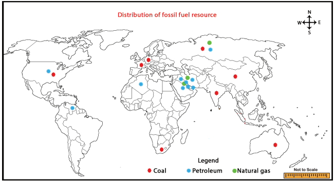
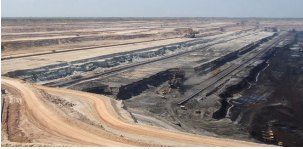
Box item Begins
Most of the coal deposits that we use now, were formed about 300 million years ago. Much of the earth was covered with steamy swamps. As the plants and trees are dead, their remains were buried underneath the swamps. Eventually, they were transformed into coal beneath the ground due to excessive heat and pressure.
Box item Ends
Petroleum is found between the layers of rocks and is drilled from oil fields located in Offshore and coastal areas. This is sent to refineries which process crude oil and produce variety of products like diesel, petrol, kerosene, wax, plastics and lubricants. Petroleum and its derivatives are called Black Gold as they are very valuable. The chief petroleum producing countries are Saudi Arabia, Iran, Iraq and Qatar. The other major producers are USA, Russia, Venezuela, Kuwait, UAE and Algeria. The leading producers in India are Digboi in Assam, Bombay High in Mumbai and the deltas of Krishna and Godavari rivers.
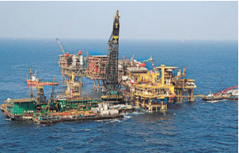
Natural gas is found with petroleum deposits and is released when crude oil is brought to the surface. It can be used as a domestic and industrial fuel.
More than 50% of the global natural gas reserves are found in United States of America, Russia, Iran and Qatar. In India, Krishna and Godavari Delta, Assam, Gujarat and some areas of offshore in Mumbai have natural gas resources.
Natural resources are obtained from environment .
Renewable resources can be used repeatedly and replaced naturally .
Non-renewable resources once consumed, cannot be replaced .
Solar energy is not harmful to the environment .
Hydroelectricity is generated from moving water with high velocity and great falls with the help of a turbines and dynamos .
Metallic resources are iron, copper, gold, bauxite, silver, manganese exectra .
Non-metallic resources are mica, limestone, gypsum, dolomite, phosphate, exectra .
Fossil fuels resources are normally formed from the remains of dead plants and animals .
Glossary |
|
|
|
1 |
Biotic resources |
obtained from living and organic materials |
உயிரியல் வளங்கள் |
2 |
Abiotic resources |
obtained from non-living, non-organic materials |
உயிரற்ற வளங்கள் |
3 |
Hydroelectricity |
generated from moving water with high velocity and great falls with the help of turbines and dynamos |
நீர் மின் சக்தி |
4 |
Metallic resources |
resources that are composed of metals |
உலோக வளங்கள் |
5 |
Non Metallic resources |
resources that do not comprise of metals |
உலோகம் அல்லாத வளங்கள் |
6 |
Duralumin |
a hard, light alloy of aluminium with copper and other elements |
துராலுமின் |
7 |
Fossil fuel |
formed from the remains of dead plants and animals |
படிம எரிபொருள் |
8 |
Thermal Power |
Electricity produced from coal |
அனல் மின் சக்தி |
9 |
Black Gold |
Petroleum and its derivatives |
கருப்புத்தங்கம் |
10 |
Precious metal |
a metal that is valuable and usually rare |
விலை மதிப்பற்ற உலோகம் |
1. Which one of the following is renewable resource ?
a) Gold
b) Iron
c) Petrol
d) solar energy
2. At wichthe largest solar power project situated in India?
a) Kamuthi
b) Aralvaimozhi
c) Muppandal
d) Neyveli
3. Which is one of the first metals known and used by man?
a) Iron
b) copper
c) Gold
d) Silver
4. Dash is one of the indispensable minerals used in electrical and electronics Industry.
a) Limestone
b) Mica
c) Manganese
d) Silver
5. Electricity produced from coal is called Dash
a) Thermal Power
b) Nuclear power
c) Solar power
d) Hydel power
1. Dash is the largest producer of hydroelectricity.
2. Iron ores are found at Dash in Tamil Nadu.
3. Dash is produced from bauxite ore.
4. Dash is used in making electrical batteries.
5. Petroleum and its derivatives are called Dash
1 |
Renewable resource |
Iron |
2 |
Metallic resource |
Mica |
3 |
Non-metallic resource |
Vind energy |
4 |
Fossil fuel |
Sedimentary rock |
5 |
Limestone |
Petroleum |
1. Assertion (A) : Vind power is Clean Energy.
Reason (R) : Vind turbines do not produce any emissions
a. Assertion and Reason are correct and Reason explains Assertion
b. Assertion and Reason are correct but Reason does not explain Assertion
c. Assertion is incorrect but Reason is correct
d. Both Assertion and Reason are incorrect
2. Assertion (A) : Natural gas is found with petroleum deposits.
Reason (R) : It can be used as a domestic and industrial fuel.
a. Assertion and Reason are correct and Reason explains Assertion
b. Assertion and Reason are correct but Reason does not explain Assertion
c. Assertion is incorrect but Reason is correct
d. Both Assertion and Reason are incorrect
1. Define - Resource.
2. What are the uses of iron?
3. What are the major utilizers of solar energy in the world?
4. Name the types of coal based on carbon content.
5. Give a short note on Duralumin.
1. Biotic resources and abiotic resources
2. Renewable resources and non-renewable resources
3. Metallic resources and non-metallic resources .
1. Aluminium has wide range of uses compared to other metals.
2. Water is considered as a great source of energy.
1. Explain the different types of renewable resources.
2. Describe the non-metallic resources.
3. What are the different types of fossil fuel resources? Explain them.
1. Mark the metallic resources on the given outline map of the world.
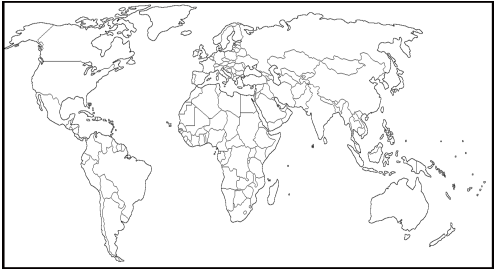
2. Crossword puzzle
2. The leading coal producers of the world
4. Considered as a great source of energy
5. Precious metal like gold
6. Used as an insulating material in electrical industry
1. Used in making electrical batteries
2. Good conductor of heat and electricity
3. The largest producer of gold in India
5. Produces energy in the form of heat and light
1. K. Siddartha (2016), Economic Geography, Kitab Mahal Publications, New Delhi.
2. H.M Saxena (2013), Economic Geography, Rawat Publications, New Delhi.
3. Majid Husain (2012), World Geography, Rawat Publications, New Delhi.
4. www.usgs.gov (2015) United States Geological Survey, Reston, USA